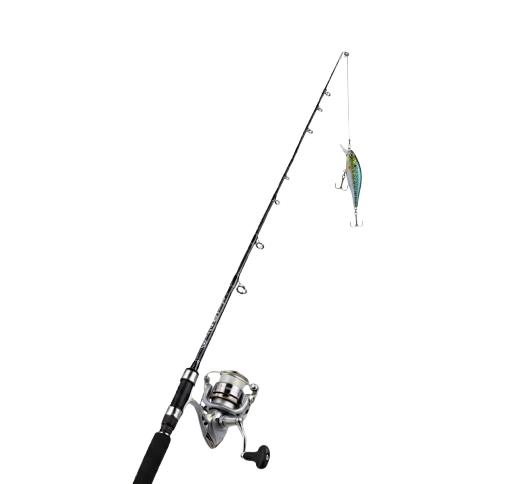

釣り
はじめる
操作方法
ユーザー設定
追加
閉じる
一時停止中
ゲームを続ける
はじめからやり直す
操作方法の確認
ホームに戻る
操作方法
1
スペースキー
を押して、ルアーを水面に投げ入れます。
2
魚が食いついて画面に
「！」
が出たら、素早く
左クリック
！
3
リール画面になったら、
左クリック長押し
でゲージを右端まで保ち、魚を釣り上げろ！
総合評価ランク
S
5000点〜
A
3500点〜
B
2000点〜
C
500点〜
D
499点以下
スタート
戻る
左クリック長押しで巻け！
現在のポイント
0
一時停止
スペースキーで投げる！
！
魚を待っています...
ゲット！
次のステージ
終了する
逃げられた…
リトライ
終了する
